Measurements in, sewing patterns out
A free browser tool that turns body measurements into sewing patterns you print at actual size. I built it to make clothes that fit me. After I posted it, people asked for women’s outfits, so I added eight the same day.

Drafting a pattern by hand takes an afternoon of maths
Ready-made clothes always had one issue or another for me, and I like mine loose and breathable. Getting clothes made to fit starts with a pattern. Drafting one means taking a dozen measurements, working out ease and curves on paper, then drawing every piece at full size.
Tailors live with the same cost at scale: every client brings new measurements, so they redraft the same shirt or trouser block again and again.
The goal: type in measurements, pick a garment, and print a pattern that is ready to cut, at true scale, with the sewing details a beginner would otherwise miss.
A tool for every tailor, which was too much
My first version, in March 2026, aimed at tailors and fashion designers: enter a client’s measurements, get draft cut-outs for men and women. I started with a men’s trouser based on the Aldrich method, then added shirts, and rewrote the React build as one HTML file that opens with a double-click.
It drew the pieces, but it was a sketch, not a tool:
- No seam allowance. You still had to add it by hand.
- Screen-only output. No reliable true scale, so nobody could print and cut from it.
- Scope with no edges. Every garment and a client database, none of it testable.
I parked it.
Design for one user first: me
Coming back in October, three questions shaped the rebuild:
| Question | Answer | What it changed |
|---|---|---|
| Who is it for? | Me | I can check every pattern against my own measurements before anyone else trusts it |
| Which styles first? | Shirts, trousers, shorts | Three garments done well beat ten done roughly |
| How does it print? | 1:1 on my large-format printer | True scale became the core requirement, not a feature |
It stays one self-contained page: no sign-up, no server. Measurements save in the browser.
Print at true scale, on one sheet
The PDF uses real centimetres, sized to the paper roll you choose: 24, 36, 42 or 60 inches. The layout packs pieces across the roll and rotates any piece that would run off the edge, so a shirt prints as one continuous sheet.
- A 10 cm test square on every sheet, to catch printer scaling before you cut.
- Seam allowance built in and adjustable. Solid line means cut, dashed means stitch.
- Everything on the piece: grainlines, matching notches, fold lines, darts, and how many to cut.
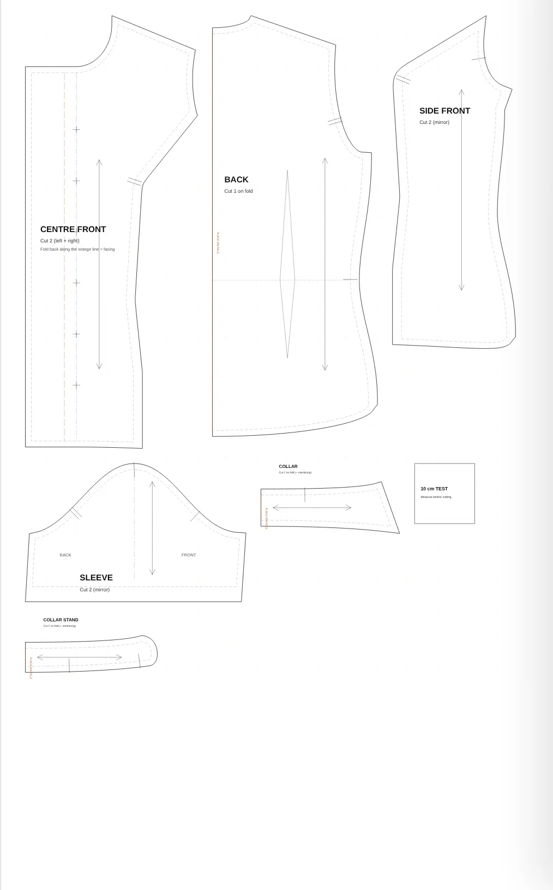
Check the fit before anyone cuts fabric
A drafting mistake usually shows up after you’ve cut and sewn. So every draft runs a set of checks, with a green or yellow dot for each:
- Ease at chest or bust, waist and hip, with the finished measurement.
- Sleeve width against the upper arm, and armhole against sleeve head.
- Seams sewn together come out the same length.
- Collar neckline against the neck measurement.
A status line above the sketch says “Fit checks OK” or how many need a look. Every measurement field says where to put the tape.
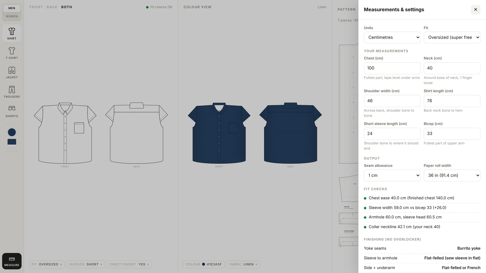
Add “Oversized” because that’s how I dress
Slim, regular and relaxed covered the usual range, but I wear my clothes very loose. I added a fourth fit, Oversized. It isn’t just a bigger size: each garment has its own ease values, and oversized tops drop the shoulder and deepen the armhole so the volume hangs right.
Finish seams neatly without an overlocker
Most home sewists don’t own an overlocker, and I don’t either. Linen and loose cotton, the breathable fabrics I wanted, fray fast.
So the tool tells you how to finish each seam with a normal machine: French seams, flat-felled seams, a “burrito” yoke, bias binding. If those seams need 1.5 cm allowance and yours is lower, it offers to fix it in one tap.
The first illustrated guide was hard to read. I rebuilt it with table-top views, shaded right and wrong sides, clear stitch marks, and QR codes to short video demos.
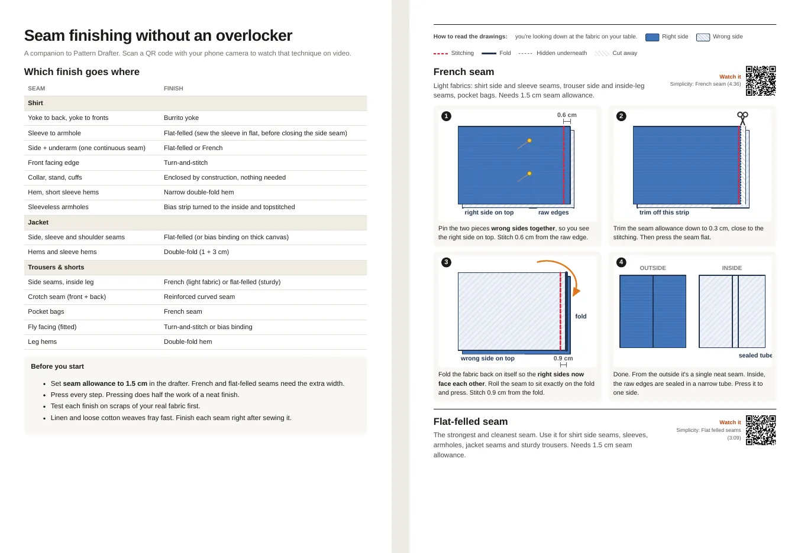
A studio layout, without pretending to do 3D
I wanted the tool to feel like a design studio rather than a form. Real 3D draping isn’t something a single web page can do well, and a fake one would mislead people about fit.
I chose flat sketches drawn from the pattern itself, so when you change a measurement the sketch changes too. Next to it, a colour view tries 12 colours and 6 fabric looks, including Adire.
- Three panels: technical sketch, colour view, pattern sheet.
- Options as chips under the sketch: fit, sleeves, pocket, waist. One tap, instant redraw.
- Measurements in a slide-out drawer, so the design stays on screen.
- Actions in plain sight. PDF, SVG, Measure and Finishing moved out of a menu, because downloading the PDF is the whole point.
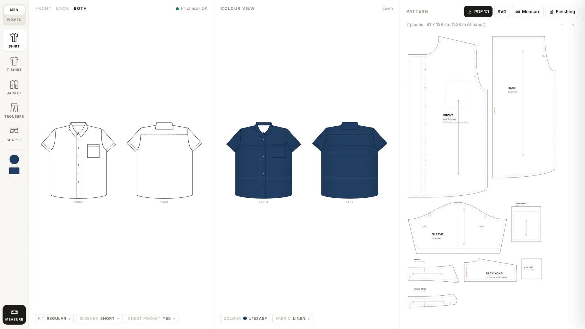
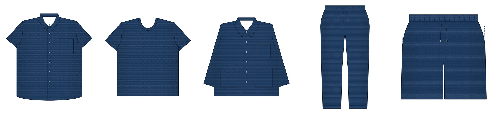
Posted in reply to “Drop your project URL”
The tool went live at saintbuilds.com/patterns. I shared it on X in reply to a post asking builders for their project URLs, aimed at fashion lovers who want to start sewing and tailors who want to stop redrafting.
More people bookmarked it than liked it: they were saving it to use. Two replies changed the roadmap: one asked for women’s outfits, and someone learning to sew asked whether fabric type is considered.
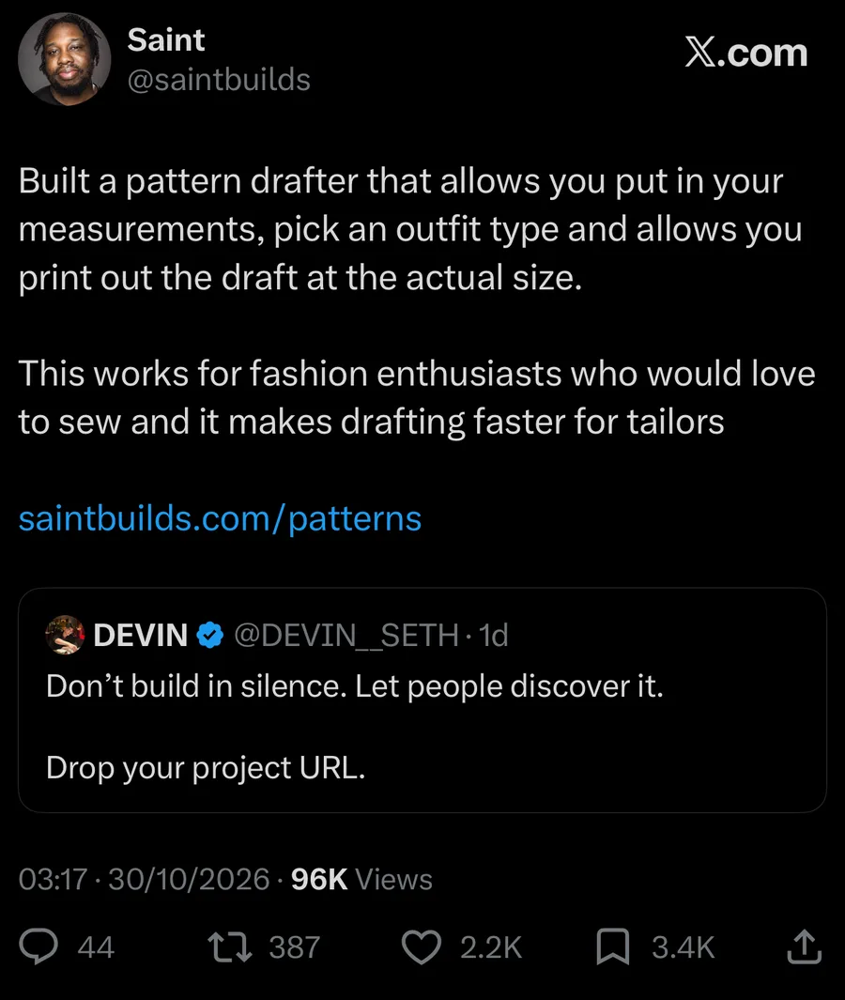
Replies from people who sew
“HOLY COW this could SERIOUSLY cut down time spent modifying existing patterns or drafting during the mock up phase... im sending this to every stitcher i know!!”A stitcher on X
“This is awesome, as a woman who has modified patterns and drafted blocks for a solid decade... I would love to help enhance the range of measurements your model is accounting for.”A pattern drafter with ten years’ experience
“Trying to learn sewing might actually do this.”Someone learning to sew
“Would you consider adding a loose, tunic length top and pull-on pants with a straight leg?”Shipped the next morning
Eight garments, built on three engines
I chose eight garments: a button-down shirt, corset top, flared skirt, fitted skirt, backless gown, flowing gown, bodycon dress and bell bottoms. Before building, I researched how each is drafted: bodice blocks with bust darts, circle-skirt maths, negative ease for stretch knits, corset panels, and why low backs gape.
None could reuse the menswear shirt block, because women’s tops shape the bust with darts or seams. But they shared three foundations, so I built those:
- A bodice engine that drafts a front with a bust dart and can move it: to the side, into princess seams, or into the waist.
- A skirt engine for circle, fitted and gown skirts.
- A women’s trouser block built on the menswear trouser code.
Four product calls came before any code: womenswear gets its own section; the corset ships as a zip top and a laced, boned corset; the backless gown uses a halter neck; the flowing gown offers circle and gathered skirts.
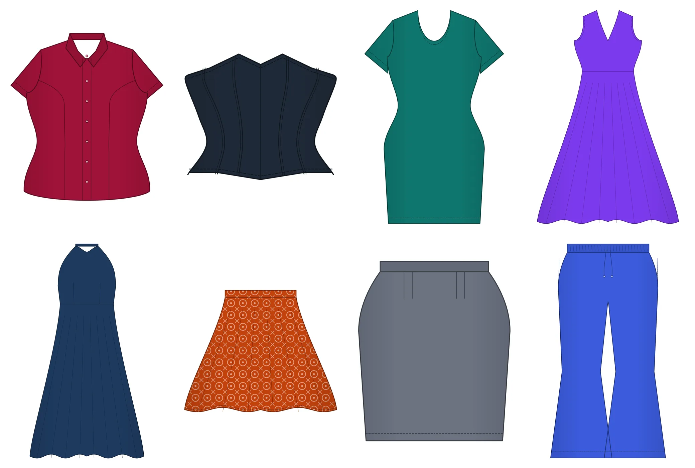
Easy wins first, the hard engine second
Each phase shipped something testable, and womenswear stayed off the live site until all eight were done.
| Phase | Garments | What made it work |
|---|---|---|
| 1 | Skirts | Circle skirts are pure geometry. The tool warns when a full circle won’t fit 150 cm fabric. Fitted-skirt darts are sized from the waist-to-hip difference. |
| 2 | Bodice + shirt | The hardest part. For princess seams, the engine rotates the bust dart into the seam and checks both edges match. |
| 3 | Bodycon + corset | The bodycon is cut smaller than the body by the fabric’s stretch. The corset is six panels per side, checked seam by seam. |
| 4 | Gowns | A floor-length circle skirt splits into panels narrow enough for the roll. Gathered skirts get cutting sizes instead. |
| 5 | Bell bottoms | The trouser block, fitted to the knee and flaring to the hem width you enter. |
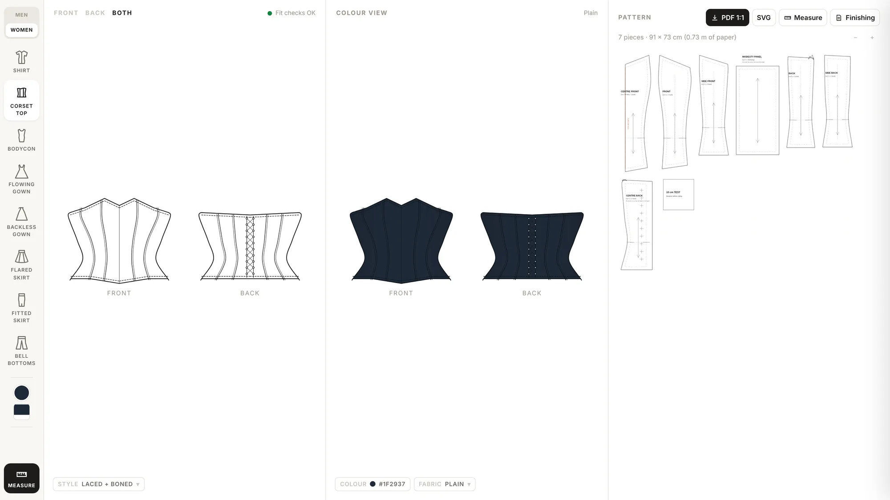
Small calls that stop real problems
- Backless gowns gape at the open edges, so the pattern says to stay-tape the armholes.
- A halter front has nowhere for a side dart. The shaping moves into the waist, and a dart too big to sew cleanly is split into two.
- The laced corset pulls the waist in by 5 cm, the gentle end of what corset makers recommend, and lists how many bones to buy.
- Buttons sit at the bust point on the women’s shirt, so the front doesn’t gape.
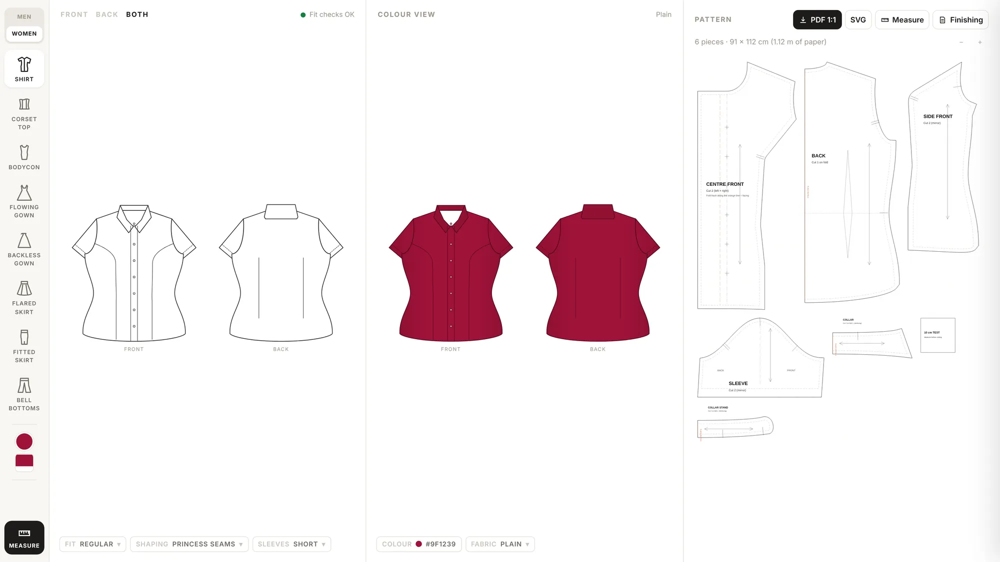
Fabric shapes the pattern where it matters
Fabric changes a pattern most where stretch or drape is part of the fit, so that’s where the tool asks:
- Bodycon: choose the fabric’s stretch and the draft shrinks to match. A woven won’t fit, and the check says so.
- Skirts and gowns: pieces are checked against fabric width, with a reminder to hang circle skirts for 24 hours before hemming.
- Every finishing panel names fabrics that suit the garment.
64 drafts at the extremes, then a private preview
I ran every women’s garment at small and large sizes, in two fits and two option sets: 64 drafts. That caught two real bugs: sleeves narrower than the arm on small sizes, and collars slightly small on large ones. Both are fixed.
I tried the whole release on my phone from a private preview link, then it went live the same evening.
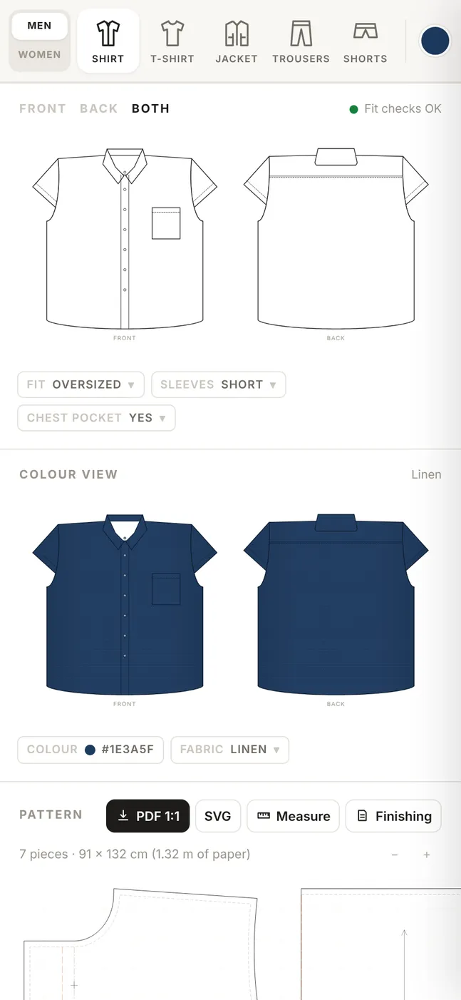
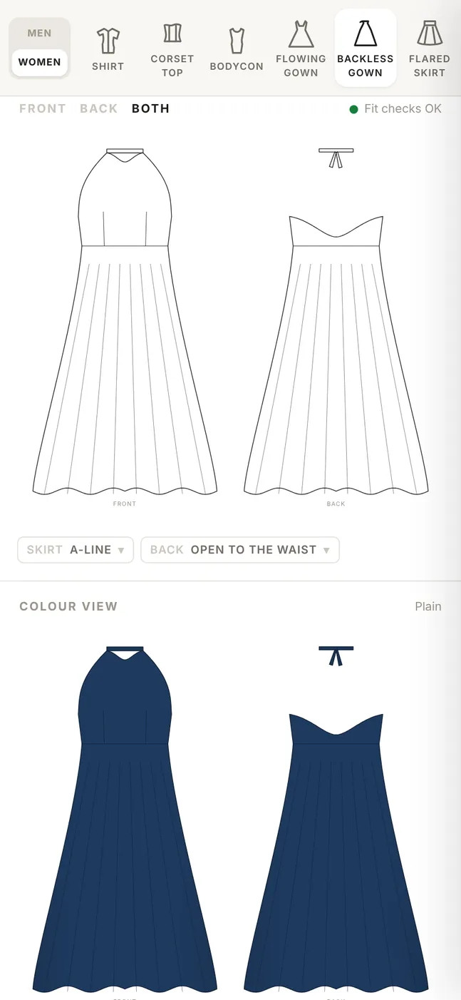
Designer as builder, with AI as the pair
I designed and shipped this end to end, working with Claude as my build partner. I set the direction, made the product calls, and tested every release on screen and on paper. Claude wrote most of the drafting code and did the drafting research with me. Working this way, one person went from a reply on X to eight new garments, live, in a day.
Shipped since launch, and next
Since launch: A4 and US Letter printing, saved measurements per person, a fabric estimate, a sample-measurements warning, and the tunic and pull-on pants people asked for. Next:
- Toile-test the womenswear on real bodies with the experienced drafter who offered to help.
- Remember fit fixes, such as “add 2 cm to the seat”.
- Nigerian styles such as agbada, buba and kaftan.